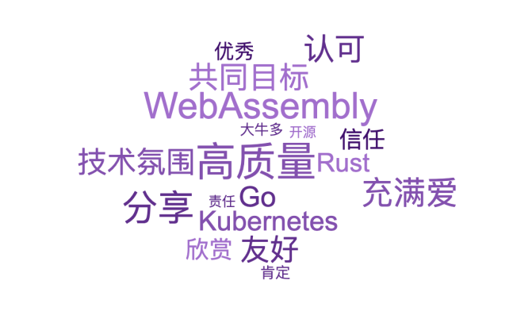

Team Culture
What Kind of Team Do You Want to Be On?

Everyone has high hopes for the team they join. But we need to shift the perspective:
The team you want to be on -> be the person who makes it so Consumer -> Builder
Lots of experts? Become one. Technical atmosphere? You drive the technical atmosphere. Friendly? You show friendliness. Go? You master it. High quality? Hold yourself to a strict standard.
Learn from Each Other, Grow Together
Let Dev learn Ops skills, and let Ops learn Dev skills.
This way Dev more easily writes applications that are easy to operate, and Ops more easily troubleshoots and restores stability.
This does not mean one person doing two people's work. Each person focuses on their own area while understanding more of the context. For developers, that means understanding how the application is deployed, monitored, and upgraded, where it is deployed, and how traffic is routed. For operations, that means understanding the application lifecycle, knowing the pain points of development, and knowing that requirements change often.
Understanding the context of the work is really about doing your own job better.
Learning from each other and blending disciplines are basic qualities a DevOps member should have. Growing together and sharing responsibility are what give a team cohesion and let it reach its full effectiveness.
Encourage Mistakes
This one sounds odd. Isn't it better not to make mistakes?
Of course it is better not to make mistakes, but not making mistakes is impossible. What we need is to encourage small mistakes, and to make them deliberately.
There are two main points here:
- Encourage innovation
- Control the scope
Forbidding mistakes also kills innovation. There are a great many cloud-native tools today, and sometimes introducing a single new tool can completely solve a class of problems. But when introducing a new tool or process, control the scope: experiment quickly on a small scale, accumulate experience, establish conventions, and only then roll it out gradually.